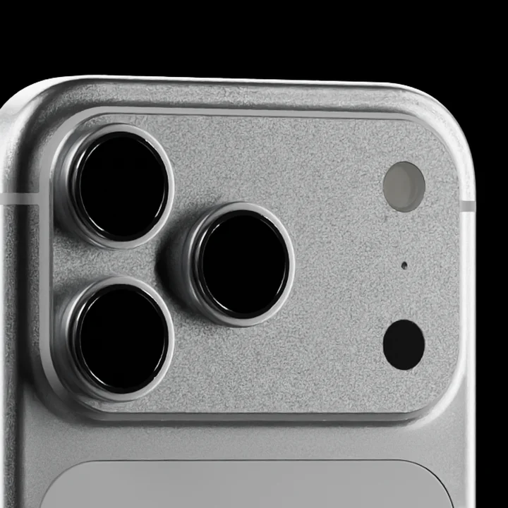
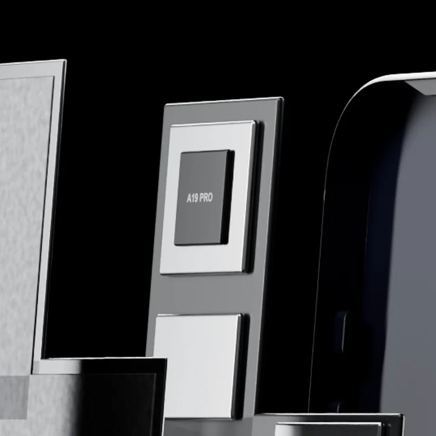
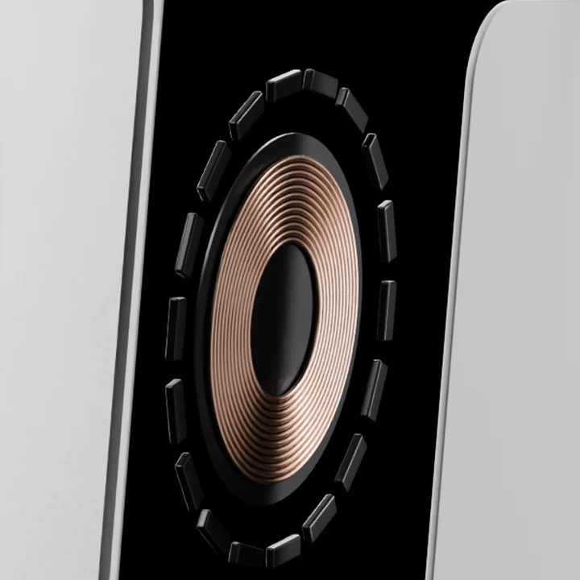

Ukázka · Whyte Lynx
Otočte ho, rozložte a složte zpátky. Stačí posouvat stránku.
Posouvejte dolůTělo je vcelku z leteckého hliníku řady 7000.
Ceramic Shield poprvé chrání i zadní stranu.
Krycí sklo, displej, chlazení, deska s baterií, rám, snímače, MagSafe, záda a čočky.
Odpařovací komora s deionizovanou vodou je přivařená laserem k tělu a odvádí teplo z čipu A19 Pro.
Hlavní, širokoúhlý a teleobjektiv, který přiblíží osmkrát v optické kvalitě.
Všech devět vrstev na svém místě.
Technika
Zblízka



O ukázce
Celá scéna je 300 předem připravených obrázků, které se přehrávají podle posunu stránky. Proto běží plynule na počítači i na telefonu.
Místo telefonu může být váš výrobek, stroj nebo dům, klidně rozložený na součástky. Vzhled, barvy i texty jsou jen ukázka a dají se předělat podle toho, co prodáváte.
Chci podobnou stránku